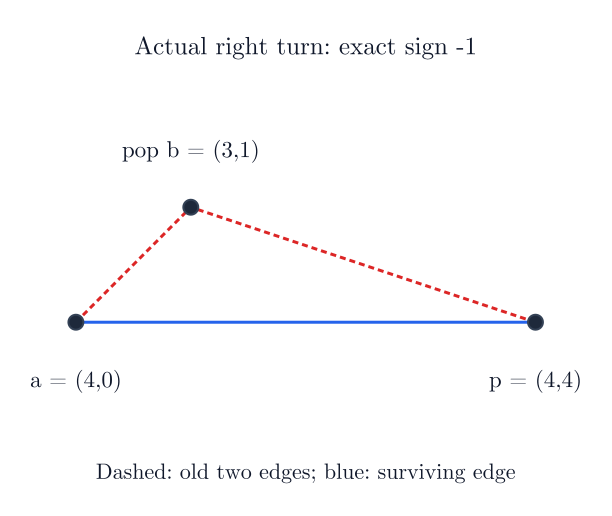
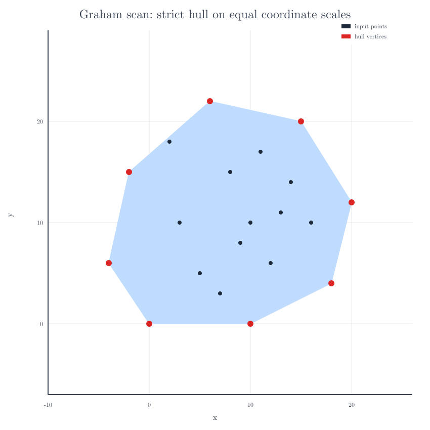
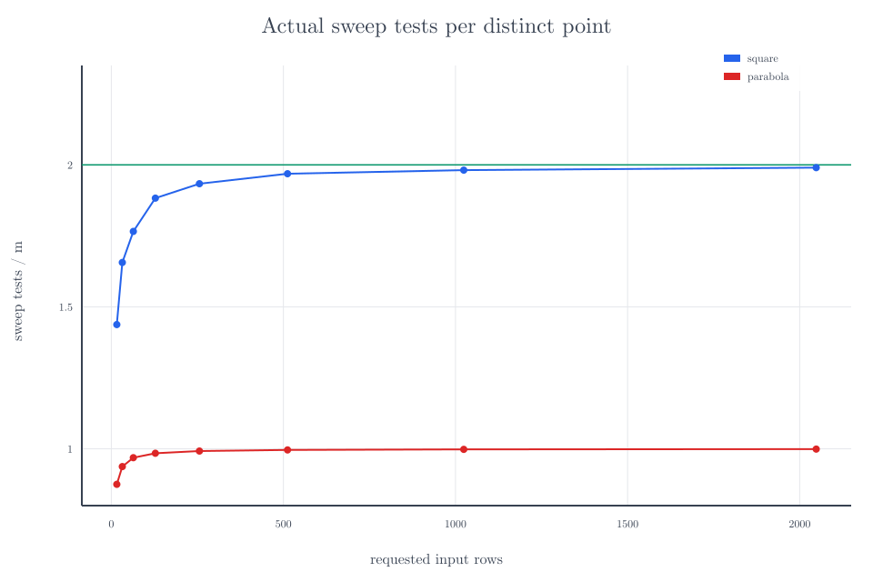
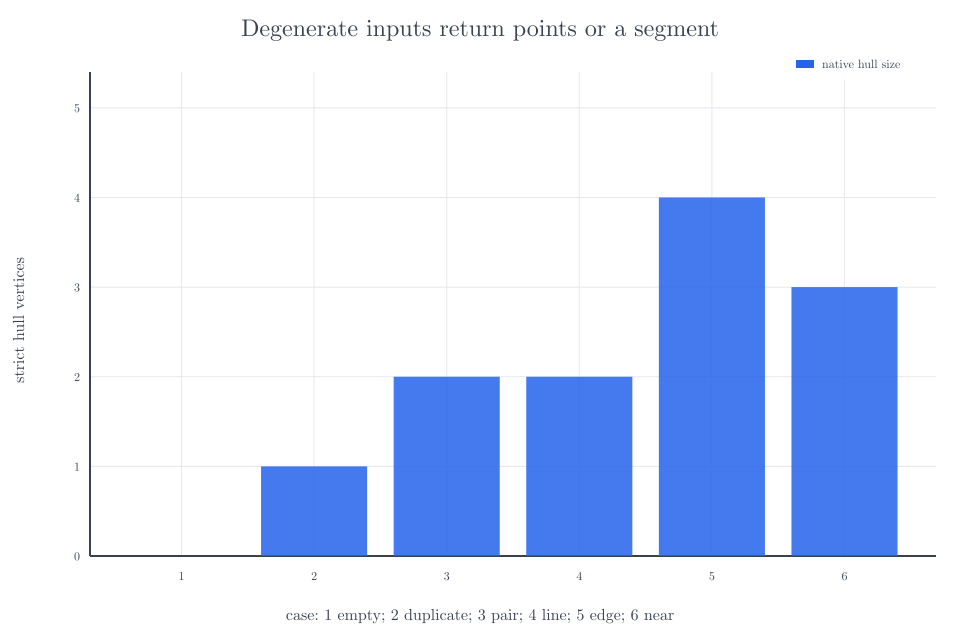

Graham scan: sort the rays, remove the right turn
Abstract
The convex hull is the smallest convex set containing a finite planar point cloud. Graham scan first orders rays around an extreme point, then keeps a stack whose boundary turns left. We begin with one actual removal from a five-point example, derive the geometric invariant and linear scan bound, and retain the original twenty-point cloud. Native records expose the producing angular order, input identities and stack edits without replay. Exact orientation signs avoid rounded-product failures, while explicit controls cover duplicate, collinear, small and invalid inputs. Work counts describe selected operations, not elapsed speed.
See one removal before the full algorithm
Take the pivot (0,0), then rays through (4,0), (3,1), (4,4) and (0,4). When (4,4) arrives, the current top (3,1) bends the path right. Removing that point connects (4,0) directly to (4,4). The following program selects the first actual pop and the test immediately preceding it; it does not reconstruct a second scan.
#include <dm/dm.hpp>
int main() {
std::filesystem::create_directories("build");
const auto t =
dm::geometry::graham_scan_trace({{0, 0}, {4, 0}, {3, 1}, {4, 4}, {0, 4}});
std::print("| order | original row | x | y |\n| ---: | ---: | ---: | ---: |\n");
for (std::size_t i = 0; i < t.ordered.size(); ++i) {
const auto &p = t.ordered[i];
std::print("| {} | {} | {} | {} |\n", i, p.input_index, p.point.x,
p.point.y);
}
std::print("\n| event | action | candidate | edited point | exact turn | stack size after |\n| ---: | " "--- | ---: | ---: | --- | ---: |\n");
const char *names[] = {"test", "pop", "push"};
for (std::size_t i = 0; i < t.events.size(); ++i) {
const auto &e = t.events[i];
std::print("| {} | {} | {} | {} | {} | {} |\n", i,
names[std::size_t(e.action)], e.candidate, e.point,
e.action == dm::geometry::HullAction::test
? std::to_string(e.turn) : "none", e.stack_size);
}
const auto pop =
std::find_if(t.events.begin(), t.events.end(), [](const auto &e) {
return e.action == dm::geometry::HullAction::pop;
});
if (pop == t.events.end() || pop == t.events.begin())
throw std::runtime_error("pop witness");
const auto &e = *(pop - 1);
const auto a =
t.ordered[e.a].point, b =
t.ordered[e.b].point, c = t.ordered[e.candidate].point;
dm::graphics::Diagram d(115, 950);
dm::graphics::DiagramStroke red;
red.color = {220, 38, 38};
red.width = 3;
red.dashed = true;
dm::graphics::DiagramStroke blue;
blue.color = {37, 99, 235};
blue.width = 3;
d.path({{a.y, -a.x}, {b.y, -b.x}, {c.y, -c.x}}, red).path(
{{a.y, -a.x}, {c.y, -c.x}}, blue);
for (auto p : {a, b, c})
d.ellipse({p.y, -p.x}, .065, .065, {30, 41, 59});
d.text({a.y, -a.x - .5}, std::format("a = ({},{})", a.x, a.y), 23).text(
{b.y, -b.x + .5}, std::format("pop b = ({},{})", b.x, b.y), 23).text(
{c.y, -c.x - .5}, std::format("p = ({},{})", c.x, c.y), 23).text(
{2, -1.6}, std::format("Actual right turn: exact sign {}", e.turn), 25).text({2, -5.3}, "Dashed: old two edges; blue: surviving edge", 22).save_svg("build/graham_turn.svg");
if (e.turn != -1 || t.analysis.hull.size() != 4)
throw std::runtime_error("actual right turn");
}| order | original row | x | y |
|---|---|---|---|
| 0 | 0 | 0 | 0 |
| 1 | 1 | 4 | 0 |
| 2 | 2 | 3 | 1 |
| 3 | 3 | 4 | 4 |
| 4 | 4 | 0 | 4 |
| event | action | candidate | edited point | exact turn | stack size after |
|---|---|---|---|---|---|
| 0 | push | 0 | 0 | none | 1 |
| 1 | push | 1 | 1 | none | 2 |
| 2 | test | 2 | 2 | 1 | 2 |
| 3 | push | 2 | 2 | none | 3 |
| 4 | test | 3 | 3 | -1 | 3 |
| 5 | pop | 3 | 2 | none | 2 |
| 6 | test | 3 | 3 | 1 | 2 |
| 7 | push | 3 | 3 | none | 3 |
| 8 | test | 4 | 4 | 1 | 3 |
| 9 | push | 4 | 4 | none | 4 |

Derive the orientation and stack invariant
For points \(a,b,p\), the determinant is twice their signed triangle area:
Positive means left, negative right, and zero exactly collinear. Here \(\Delta((4,0),(3,1),(4,4))=-4\), so the middle point cannot remain on the strict hull boundary. The native predicate returns only the exact sign for the stored finite binary64 coordinates, using fixed integer arithmetic rather than subtracting rounded floating products. It does not recover unknown unrounded measurements.
Preparation sorts coordinates lexicographically and removes duplicates, retaining the earliest original row. For at least three distinct points, choose the minimum y, then minimum x, as pivot. Every other point lies in its closed upper half-plane, with any horizontal ray pointing right. Consequently, the orientation sign orders rays by angle without an atan2 calculation or a wraparound discontinuity. Equal-angle points go near to far: increasing y, then x, suffices on this restricted set of rays and avoids squared-distance overflow.
As each candidate arrives, the stack is the convex boundary chain for the processed angular prefix. While its last triple is nonpositive, pop the top. With increasing ray angles, a right-turn middle point lies inside the boundary completed by the new candidate; a zero-turn middle point lies on an edge and is omitted from the strict vertex list. Each removal restores the only possibly broken end of the chain. Pushing the candidate preserves the invariant. At completion the two extreme rays join through the pivot, yielding the counterclockwise hull without repeating its first vertex.
Duplicates, all-collinear inputs and fewer-than-three shortcuts need explicit treatment; a claim that every returned list is a polygon would be incorrect.
Preserve the original twenty-point cloud
This fixed cloud has eight hull vertices. Earliest original row IDs accompany their coordinates. The numerical plot uses a square data region and equal coordinate spans, so a unit on x has the same displayed length as a unit on y. The monotone-chain comparison is another native algorithm sharing the exact predicate; independent supporting-line tests provide separate verification.
#include <dm/dm.hpp>
int main() {
std::filesystem::create_directories("build");
const auto points = dm::geometry::graham_demo_points();
const auto a = dm::geometry::graham_scan_analyze(points);
std::print("| hull order | original row | x | y |\n| ---: | ---: | ---: | ---: |\n");
for (std::size_t i = 0; i < a.hull.size(); ++i)
std::print("| {} | {} | {} | {} |\n", i, a.input_indices[i],
a.hull[i].x, a.hull[i].y);
auto other = dm::geometry::convex_hull(points);
auto hull = a.hull;
const auto lex = [](const auto &x, const auto &y) {
return x.x < y.x || (x.x == y.x && x.y < y.y);
};
std::sort(other.begin(), other.end(), lex);
std::sort(hull.begin(), hull.end(), lex);
const auto &w = a.work;
std::print("\n{} input rows; {} distinct points; {} hull vertices; {} angular tests; {} sweep tests; {} " "pushes; {} pops. Same vertex set as native monotone chain: {}.\n",
w.input_points, w.distinct_points, a.hull.size(),
w.angular_tests, w.sweep_tests, w.pushes, w.pops, other == hull);
dm::geometry::graham_hull_plot(points, a).save_svg("build/graham_cloud.svg");
if (a.hull.size() != 8 || other != hull)
throw std::runtime_error("original cloud");
}| hull order | original row | x | y |
|---|---|---|---|
| 0 | 0 | 0 | 0 |
| 1 | 1 | 10 | 0 |
| 2 | 2 | 18 | 4 |
| 3 | 3 | 20 | 12 |
| 4 | 4 | 15 | 20 |
| 5 | 5 | 6 | 22 |
| 6 | 6 | -2 | 15 |
| 7 | 7 | -4 | 6 |
20 input rows; 20 distinct points; 8 hull vertices; 99 angular tests; 30 sweep tests; 20 pushes; 12 pops. Same vertex set as native monotone chain: true.

Count the scan separately from its sorting
Let \(n\) be the original row count, \(m\) the distinct count and \(h\) the hull size. There are two sorting phases: lexicographic preparation costs \(O(n\log n)\) comparisons, and polar sorting costs \(O(m\log m)\) exact orientation requests. Deduplication and pivot selection are linear. The stack sweep pushes every distinct point once and pops each discarded point once:
The first two candidates need no orientation test. Every later candidate produces at most one successful test, while every nonpositive test produces a pop. This amortized count proves the linear sweep. A compact trace has exactly \(P+R+T\) events, hence at most \(4m-6\); it stores edits rather than full stack snapshots. Full computation is \(O(n\log n)\), with \(O(n)\) working storage plus linear optional capture. Exact binary64 signs have a bounded fixed-integer cost, which is larger than an unchecked rounded determinant; selected counts are not timing comparisons.
The next program contrasts square clouds with all-convex integer parabola points. Its generated inputs use the existing native point-cloud API. Square coordinates are quantized on its documented grid; each requested size and actual distinct count is printed. Generator ordering and standard-library sort counts can vary across toolchains, so the bound checks concern the producing run.
#include <dm/dm.hpp>
int main() {
std::filesystem::create_directories("build");
std::print("| family | input n | distinct m | hull h | lex comparisons | angular tests | sweep tests | " "pushes | pops |\n| --- | ---: | ---: | ---: | ---: | ---: | ---: | ---: | ---: |\n");
std::vector<double> sizes, square, parabola;
for (int n : {16, 32, 64, 128, 256, 512, 1024, 2048}) {
for (auto family : {dm::geometry::PointCloud::Square,
dm::geometry::PointCloud::Parabola}) {
const auto a =
dm::geometry::graham_scan_analyze(dm::geometry::random_point_cloud(n, family, 17));
const auto &w = a.work;
const bool all = family == dm::geometry::PointCloud::Parabola;
std::print("| {} | {} | {} | {} | {} | {} | {} | {} | {} |\n",
all ? "parabola" : "square", n, w.distinct_points,
a.hull.size(), w.lexicographic_comparisons,
w.angular_tests, w.sweep_tests, w.pushes, w.pops);
if (w.pushes != w.distinct_points ||
w.pops != w.distinct_points - a.hull.size() ||
w.sweep_tests > 2 * w.distinct_points - 4 ||
(all && a.hull.size() != std::size_t(n)))
throw std::runtime_error("scan bound");
(all ? parabola : square).push_back(double(w.sweep_tests) /
w.distinct_points);
}
sizes.push_back(n);
}
auto p = dm::graphics::RPlot::create();
p.line(sizes, square, "square", {37, 99, 235}, 2).points(sizes, square, "",
{37, 99, 235}, 4).line(sizes, parabola, "parabola", {220, 38, 38}, 2).points(sizes, parabola, "", {220, 38, 38}, 4).abline_h(2, {5, 150, 105}, 1.5).title("Actual sweep tests per distinct point").x_label("requested input rows").y_label("sweep tests / m").y_limits(.8, 2.35).save_svg("build/graham_work.svg");
}| family | input n | distinct m | hull h | lex comparisons | angular tests | sweep tests | pushes | pops |
|---|---|---|---|---|---|---|---|---|
| square | 16 | 16 | 7 | 70 | 46 | 23 | 16 | 9 |
| parabola | 16 | 16 | 16 | 85 | 74 | 14 | 16 | 0 |
| square | 32 | 32 | 9 | 201 | 177 | 53 | 32 | 23 |
| parabola | 32 | 32 | 32 | 207 | 156 | 30 | 32 | 0 |
| square | 64 | 64 | 13 | 493 | 446 | 113 | 64 | 51 |
| parabola | 64 | 64 | 64 | 440 | 279 | 62 | 64 | 0 |
| square | 128 | 128 | 13 | 1148 | 1026 | 241 | 128 | 115 |
| parabola | 128 | 128 | 128 | 1022 | 656 | 126 | 128 | 0 |
| square | 256 | 256 | 15 | 2381 | 2382 | 495 | 256 | 241 |
| parabola | 256 | 256 | 256 | 2459 | 1636 | 254 | 256 | 0 |
| square | 512 | 512 | 14 | 5353 | 5472 | 1008 | 512 | 498 |
| parabola | 512 | 512 | 512 | 5487 | 3919 | 510 | 512 | 0 |
| square | 1024 | 1024 | 17 | 12161 | 11802 | 2029 | 1024 | 1007 |
| parabola | 1024 | 1024 | 1024 | 12946 | 9106 | 1022 | 1024 | 0 |
| square | 2048 | 2048 | 18 | 26871 | 27330 | 4076 | 2048 | 2030 |
| parabola | 2048 | 2048 | 2048 | 26474 | 20757 | 2046 | 2048 | 0 |

Degeneracies and a rounded-product counterexample
Empty input returns empty. One distinct point returns one; two distinct points use the historical lexicographic shortcut, which need not put the lowest-y point first. At least three collinear distinct points are scanned and reduce to the pivot and farthest endpoint. An edge-interior point is omitted. Exact duplicate equality merges signed zeros, preserving the first matching original representation.
For a rounding witness, set \(\varepsilon=2^{-52}\), \(a=(0,0)\), \(b=(1,1+\varepsilon)\), \(c=(1+\varepsilon,1+2\varepsilon)\). All coordinates are representable, and the exact determinant is
The old rounded cross product returns zero here. Exact-sign sorting and scan tests retain all three noncollinear vertices. Inputs at the subnormal and maximum finite scales also require exact predicates; the core supports them, while a display renderer has a narrower range and should not be used to certify hull correctness.
#include <dm/dm.hpp>
int main() {
std::filesystem::create_directories("build");
const double eps = std::ldexp(1., -52);
const std::vector<dm::geometry::Point2D> near{{0, 0}, {1, 1 + eps},
{1 + eps, 1 + 2 * eps}};
const double rounded = dm::geometry::cross(near[0], near[1], near[2]);
const int exact = dm::geometry::orientation_sign(near[0], near[1], near[2]);
std::print("Rounded determinant: {}; exact sign: {}.\n\n", rounded, exact);
const std::vector<std::vector<dm::geometry::Point2D>> cases{
{}, {{0, 0}, {-0., 0}}, {{2, -1}, {0, 4}},
{{0, 0}, {1, 1}, {2, 2}, {1, 1}},
{{0, 0}, {2, 0}, {2, 2}, {0, 2}, {1, 0}}, near
};
const std::vector<std::string> names{"empty", "duplicate point",
"two-point shortcut", "collinear",
"edge point", "near collinear"};
std::vector<double> x, h;
std::print("| case | original rows | distinct | hull vertices | first original row |\n| --- | ---: | " "---: | ---: | --- |\n");
for (std::size_t i = 0; i < cases.size(); ++i) {
const auto a = dm::geometry::graham_scan_analyze(cases[i]);
x.push_back(i + 1);
h.push_back(a.hull.size());
std::print("| {}: {} | {} | {} | {} | {} |\n", i + 1, names[i],
cases[i].size(), a.work.distinct_points, a.hull.size(),
a.input_indices.empty() ? "none"
: std::to_string(a.input_indices[0]));
}
const std::vector<dm::geometry::Point2D> tiny{{0, 0}, {4, 0}, {3, 1},
{4, 4}, {0, 4}};
const auto t = dm::geometry::graham_scan_trace(tiny);
bool quota = false, invalid = false;
try {
(void) dm::geometry::graham_scan_trace(tiny, {5, t.events.size() - 1});
} catch (const std::length_error &) {
quota = true;
}
auto bad = tiny;
bad.push_back({std::numeric_limits<double>::quiet_NaN(), 0});
try {
(void) dm::geometry::graham_scan_trace(bad, {1, 1});
} catch (const std::invalid_argument &) {
invalid = true;
}
const auto full =
dm::geometry::graham_scan_trace(tiny, {5, t.events.size()});
auto copy = full;
copy.events[0].point = 99;
std::print("\nOne-short event cap rejects: {}; exact cap retains {} events; nonfinite input rejected " "before caps: {}; copied history independent: {}.\n",
quota, full.events.size(), invalid,
full.events[0].point != copy.events[0].point);
auto p = dm::graphics::RPlot::create();
p.bars(x, h, "native hull size", {37, 99, 235}).title(
"Degenerate inputs return points or a segment").x_label(
"case: 1 empty; 2 duplicate; 3 pair; 4 line; 5 edge; 6 near").y_label(
"strict hull vertices").y_limits(0, 5.4).save_svg(
"build/graham_controls.svg");
if (rounded != 0 || exact != -1 || h.back() != 3 || !quota || !invalid)
throw std::runtime_error("boundary witnesses");
}Rounded determinant: 0; exact sign: -1.
| case | original rows | distinct | hull vertices | first original row |
|---|---|---|---|---|
| 1: empty | 0 | 0 | 0 | none |
| 2: duplicate point | 2 | 1 | 1 | 0 |
| 3: two-point shortcut | 2 | 2 | 2 | 1 |
| 4: collinear | 4 | 3 | 2 | 0 |
| 5: edge point | 5 | 5 | 4 | 0 |
| 6: near collinear | 3 | 3 | 3 | 0 |
One-short event cap rejects: true; exact cap retains 10 events; nonfinite input rejected before caps: true; copied history independent: true.

The new analyze/trace APIs default to a complete original-point cap of one million, counting duplicate rows too. The trace additionally admits actual whole test/pop/push records online, default one million; zero disables either policy cap. All coordinates are validated before indexed allocation or cap checks. The legacy by-value API's argument copy happens before the function body, and it has no optional caps. Limits exclude ordinary result/work state, capacities and byte/peak-memory costs. No partial trace escapes a failure.
Owned indices retain the earliest source row; copied results and histories are independent. The legacy counted overload adds only angular plus sweep orientation requests, after successful completion, and checks signed-counter overflow. Sorting counts vary with the standard library. Independent calls share no mutable state; callers must not concurrently mutate borrowed inputs.
Evidence and limits
A hull answers an enclosure question about the supplied coordinates, not a density or outlier-robustness question. One extreme observation can enlarge it substantially. Synthetic point sets are appropriate here: they isolate turn removal, edge exclusion, degeneracy and scan growth without attaching an unrelated dataset.
R. L. Graham's [1972 primary paper](https://doi.org/10.1016/0020-0190(72)90045-2), Information Processing Letters 1, 132–133, establishes angular ordering followed by linear elimination. The paper uses an interior reference point and a cyclic formulation; this implementation uses an extreme pivot and a stack, with explicit duplicate/collinear policy. It is a related modern variant rather than a literal transcription. Exact predicate behavior is documented separately in the core orientation API.
Verification checks every subset of a three-by-three integer lattice and seeded integer clouds against an independent supporting-line oracle, reconstructs stack events and identities, and covers full finite scales, cancellation, quotas and ownership. A frozen pre-conversion kernel checks ordinary integer-input results and selected orientation counts; changes near degeneracy are intentional correctness fixes. The original hull-algorithm suite checks the caller through Chan's group-hull path as well. All executable blocks, figures, documentation examples and HTML/Markdown exports are checked before retiring the old report.